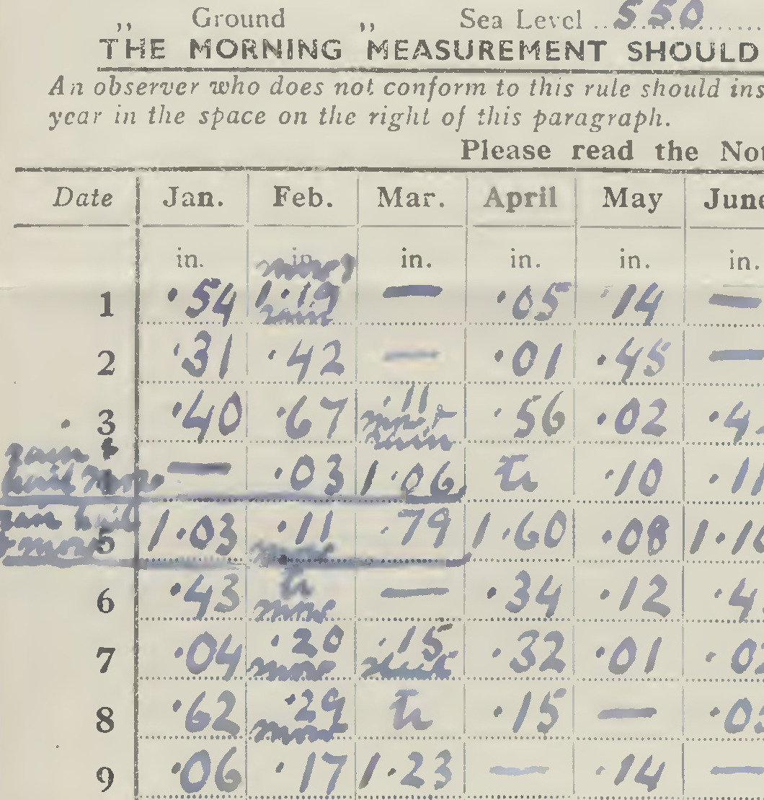

Extracting a single measurement¶
We’ve shown that Gemini can read and understand a document, but can it extract data from it? Let’s start with a simple query: “What is the rainfall for January 5th?”.
The code is simple: we load the image, ask the question, and print the answer.
#!/usr/bin/env python3
# Basic test of the Gemini API - get one observation.
import os
import PIL.Image
import google.generativeai as genai
# You will need an API key get it from https://ai.google.dev/gemini-api/docs/api-key
# I keep my API key in the .gemini_api file in my home directory.
with open("%s/.gemini_api" % os.getenv("HOME"), "r") as file:
api_key = file.read().strip()
# Default protocol is 'GRPC' - but that is blocked by the Office firewall.
# Use 'REST' instead.
genai.configure(api_key=api_key, transport="rest")
# Load the sample image
img = PIL.Image.open(
"../../images/jpgs_300dpi/Devon_1941-1950_RainNos_1651-1689-293.jpg"
)
# Pick an AI to use - this one is the latest as of 2025-01-29
model = genai.GenerativeModel("gemini-2.0-flash-exp")
# Ask a question about the image
result = model.generate_content([img, "\n\n", "What was the rainfall on January 5th?"])
with open("result.txt", "w") as file:
file.write(str(result))
# print(result)
I chose January 5th because the page is very messy in that region, and I wanted to see how well Gemini could extract data from a difficult area. It works perfectly.
response:
GenerateContentResponse(
done=True,
iterator=None,
result=protos.GenerateContentResponse({
"candidates": [
{
"content": {
"parts": [
{
"text": "The rainfall on January 5th was 1.03 inches."
}
],
"role": "model"
},
"finish_reason": "STOP",
"safety_ratings": [
{
"category": "HARM_CATEGORY_HATE_SPEECH",
"probability": "NEGLIGIBLE"
},
{
"category": "HARM_CATEGORY_DANGEROUS_CONTENT",
"probability": "NEGLIGIBLE"
},
{
"category": "HARM_CATEGORY_HARASSMENT",
"probability": "NEGLIGIBLE"
},
{
"category": "HARM_CATEGORY_SEXUALLY_EXPLICIT",
"probability": "NEGLIGIBLE"
}
],
"avg_logprobs": -0.024279586474100747
}
],
"usage_metadata": {
"prompt_token_count": 270,
"candidates_token_count": 15,
"total_token_count": 285
},
"model_version": "gemini-2.0-flash-exp"
}),
)
The answer is correct: (Compare a section cropped out of the image - below).
